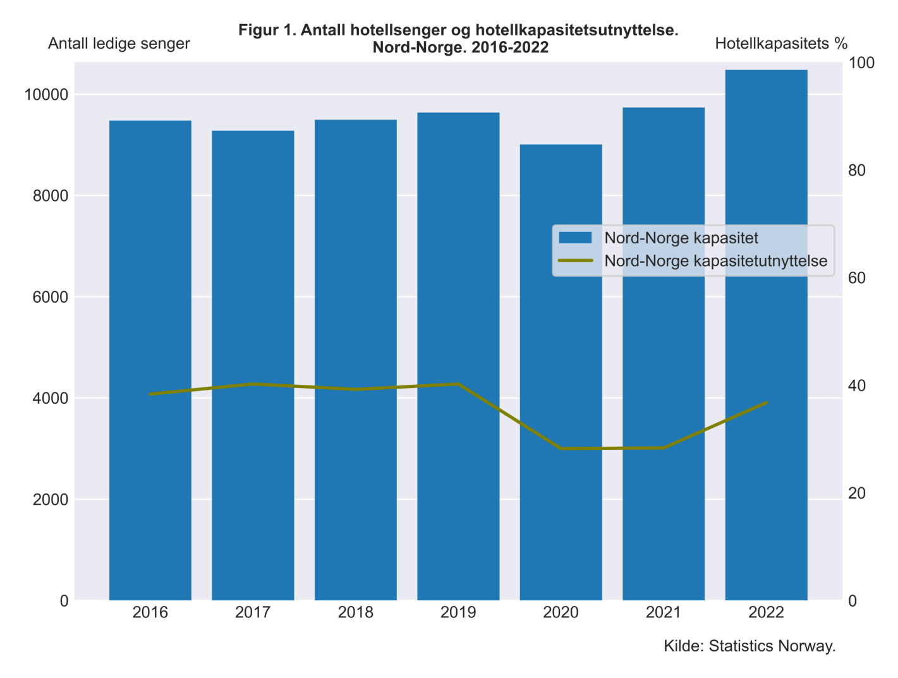
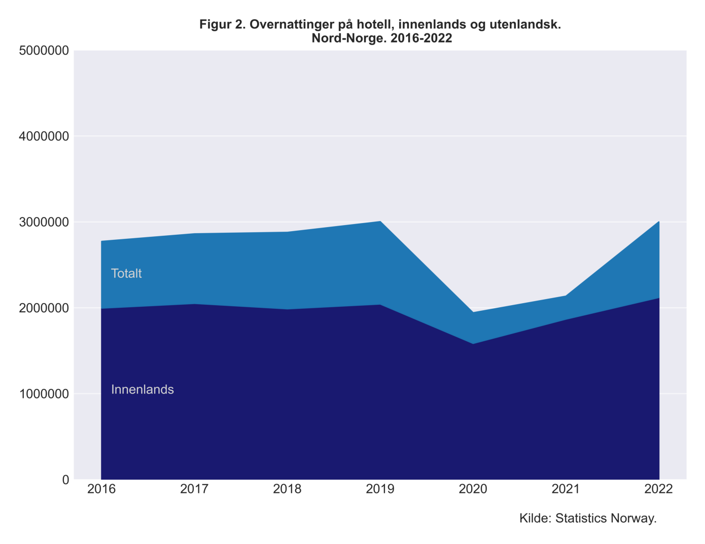
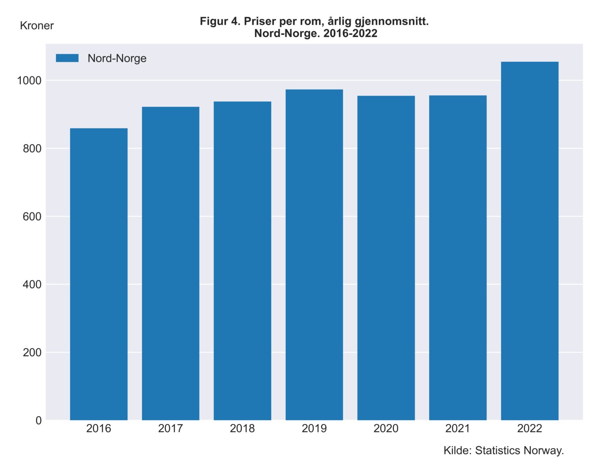
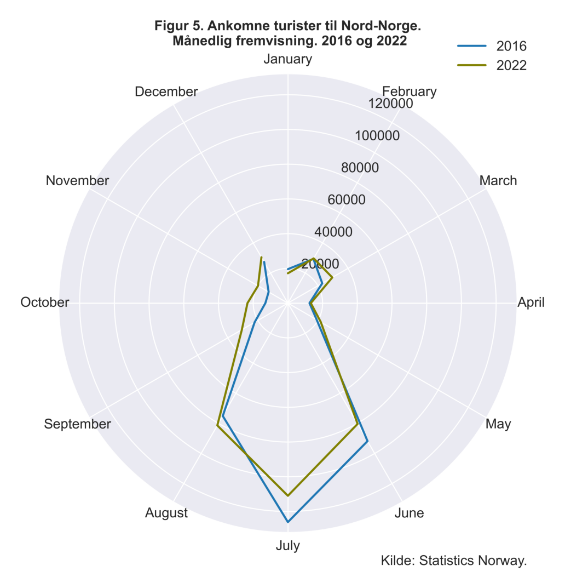

Utredning av tiltak for å innføre besøksbidrag for turisme
Kapittel 1 - Innledning
Kandidatnummer har fått i oppdrag av næringsminister Jan Christian Vestre å gjøre en samfunnsøkonomisk utredning av tiltak som kan gjøres for å innføre besøksbidrag for turisme. Det vi skal se videre på her er besøksbidrag i form av en turistskatt. Norge har i de siste tiårene opplevd en stor vekst i turisme, og regjeringen har gitt grønt lys for at norske kommuner kan innføre en turistskatt. Dette er en skatt som eksempelvis betales av overnattingsgjester i hoteller, leiligheter og lignende eller som betales i flybilletten til destinasjonen.
Grunnen til å innføre en slik skatt er for å kunne verne miljøet i kommunene som får ekstra stor belastning og bruk på grunn av mye turisme. Turistskatt er en form for skatt som har vært innført allerede i flere andre land, og som allerede har vært i bruk i over ti år på Svalbard. Med innføring av en turistskatt er det meningen at etterspørselen skal bli lavere til populære reisedestinasjoner. Dette vil føre til at det blir mindre bruk og miljøbelastning på grunn av overturisme.
I kapittel 2 skal vi se nærmere på turistnæringen i Nord-Norge og Svalbard. I figurer skal vi nærmere se på hvordan hotellovernattinger har utviklet seg over tid, hvilken kapasitetsutnyttelse hotellene har og hvor mange overnattinger som er av turister. Vi skal videre se på hvor mange som sysselsettes i turistnæringen og hvor mye et hotellrom i Nord-Norge koster i gjennomsnitt. Til slutt skal vi se når på året det kommer mest turister.
I kapittel 3 skal vi se nærmere på hvordan en turistskatt kan påvirke turistnæringen i Nord-Norge. Vi skal se på hvordan en turistskatt påvirker tilbud og etterspørsel etter hotellrom og flybilletter. Vi skal se på hvor stor effekt vi kan forvente av en turistskatt, og vi skal se på hvilke samfunnsøkonomiske konsekvenser turistskatten vil medbringe.
Kapittel 4 blir en sammenfatning av det vi har sett på i kapittel 2 og 3. Her skal vi konkludere med hvilke konsekvenser en turistskatt kommer til å ha for Nord-Norge.
Kapittel 2 - Turistnæringen i Norge
I denne utredningen skal vi fokusere på Nord-Norge og Svalbard. Nord-Norge består av fylkene Nordland, Troms og Finnmark. Fra 2016 til 2022 har Nord-Norge hatt en oppgang i hotellkapasitet på litt over 10 prosent, mens svalbard har hatt en litt mindre økning på 4.4 prosent (se figur 1). Kapasitetsutnyttelsen både i Nord-Norge og Svalbard har vært mellom 40 og 50 prosent av alle hotellsenger til 2019 hvor det skjedde en nedgang i kapasitetsutnyttelsen på grunn av pandemien og reisetestriksjonene som kom. I 2022 har kapasitetsutnyttelsen til hotellene kommet tilbake til normalen.
Turister sto for 776000 hotellovernattinger i Nord-Norge inkl. Svalbard i 2016 og hadde en topp på over 958000 overnattinger i 2019. På grunn av pandemien med covid-restriksjoner overnattet det kun 266000 turister i 2021. Etter pandemien har tallene tatt seg opp igjen og i 2022 sto turister for litt over 41 prosent av overnattingene i Nord-Norge inkl. Svalbard.

Turisme sysselsetter mange mennesker i Nord-Norge og Svalbard (Se figur 3.). I 2013 var det 6900 personer som var sysselsatt innenfor turisme i Troms fylke, mens i 2019 var det 9000 personer. Dette er en økning på 2100 personer fra 2013. I 2019 var det totalt 22 500 personer som var sysselsatt innenfor turisme i Nord-Norge inkl. Svalbard.

Ser man på hotelløkonomien i Nord-Norge så har den vært relativt stabil de siste årene. Den gjennomsnittlige hotellromsprisen har ligget på et område mellom 858 til 1054 kroner. Ser man på Svalbard derimot så har hotellromsprisen økt mye fra 2016. I 2016 lå gjennomsnittsprisen på et hotellrom på 1335 kroner, mens i 2022 ligger den på 1863 kroner. Dette er en økning på 71 prosent fra 2016 til 2022.

I figur 5 kan man se hvilke tider på året turister ankommer Nord-Norge inkl. Svalbard. Vi kan se at det er sommermånedene som er mest populære, i 2016 ankom det ca. 132 000 turister i juli måned mens i 2022 har det vært en liten nedgang til 116 000 ankomne turister.

Kapittel 3 - Samfunnsøkonomiske effekter av en turistskatt
Kapittel 4 - Konklusjon
Besøksbidrag i Nord-Norge og Svalbard